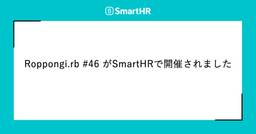

SmartHR Tech Blog
https://tech.smarthr.jp/
SmartHR 開発者ブログ
フィード

RubyKaigi 2026 follow upレポート —— SmartHRから3名が登壇し、ブースも出展！
SmartHR Tech Blog
こんにちは！プロダクトエンジニアのitojumです。 SmartHRは、2026年9月5日に東京都港区三田の株式会社IVRyで開催されたRubyKaigi 2026 follow upに協賛し、SmartHRのRubyKaigi 2026登壇者による発表のその後を報告し、スポンサーLT・ブース出展を行いました！ この記事では、イベントの模様と登壇内容をレポートします。 RubyKaigi 2026 follow upとは RubyKaigi 2026 follow upは、RubyKaigi 2026で「今後はこうしていこうと思っています」と言っていた人に、その「今後」を伺うイベントです。登壇…
3日前

第92回 Ruby関西 勉強会レポート
SmartHR Tech Blog
こんにちは、ydahです。普段はSmartHRでプロダクトエンジニアとしてR&Dユニットに所属しています。大阪に住んでいてKyobashi.rbの主催や関西Ruby会議09のチーフオーガナイザーを務めました。 2026年9月17日（木）に、第92回 Ruby関西 勉強会が開催されました。SmartHRは本イベントに協賛し、グランフロント大阪タワーAの34階にあるSmartHR大阪オフィスを会場として提供しました。 rubykansai.doorkeeper.jp この記事では、当日の様子をお届けします。 第92回 Ruby関西 勉強会の会場の様子 目次 目次 開催概要 スポンサートーク: Ra…
4日前

Roppongi.rb #46 がSmartHRで開催されました
SmartHR Tech Blog
こんにちは！SmartHRでプロダクトエンジニアをしているmatsugenです。 2026年9月10日（木）、SmartHRのオフィスで「Roppongi.rb #46」が開催されました。この記事では、当日の様子や登壇内容をレポートします。 まだまだ暑さの残る9月の夜、平日の仕事終わりにもかかわらず、多くのRubyistの皆さんにお集まりいただきました。 roppongirb.connpass.com 目次 目次 Roppongi.rbとは 参加人数 開幕 スポンサーLT 参加者LT created_atがレコード作成日時じゃなかった件：国枝桂亮さん MIDoRI開発進捗報告 9月号：Tosh…
4日前

Cloudflare Workers Tech Talks in Fukuokaに参加し、登壇しました！
SmartHR Tech Blog
こんにちは、SmartHRの @udzura です。福岡で好きなうどんは萬田うどんです。 今回、2026年9月10日（木）に福岡で開催された Cloudflare Workers Tech Talks in Fukuoka #2 に参加し、登壇しました。この記事では、イベントの様子と自分の発表内容、それに他の登壇者の発表から学んだことを紹介します。 主催のyusukebeさんから開始のご挨拶 Cloudflare Workers Tech Talks in Fukuokaとは Cloudflare Workers Tech Talks in Fukuokaは、Cloudflare Worker…
5日前

他職種の専門性を開発プロセスにつなぐ —— QAエンジニアとカスタマーサポートの協業で見えた、工程に応じた関わり方 1
1
SmartHR Tech Blog
QAエンジニアとカスタマーサポートが取り組む、顧客の知見を工程に応じて仕様に活かすための仕組みづくり こんにちは、SmartHR 品質保証本部 レバレッジ推進ユニットのgo-sanです。 前回の記事「開発プロセスに他職種の知見を届ける —— QAエンジニアによる仕組みづくりの現在地」では、カスタマーサポートチーム（以下、SP）が持つ顧客・業務知見をリリース前の品質づくりに活かすため、プロダクト要求仕様書（以下、PRD）のレビューや実装前のフィードバックを試している状況を紹介しました。 当時は、SPならではのレビュー観点を問いかけリストに整理している段階でした。その後、複数の開発案件で試したこと…
5日前

SREコミュニティイベントでLT登壇5連発！ CREが参加して見えてきたこと
SmartHR Tech Blog
こんにちは！ SmartHRのCRE（Customer Reliability Engineering）部 でマネージャーをやっている a-know（井上）です。8月下旬に夏休みを取ったのですが、6日連続で15,000歩くらい歩いた結果、左膝に爆弾を抱えてしまいました。昨年も同じようなことをしたのですが、そのときには問題なかったのですが⋯⋯年々体の衰えを感じずにはいられませんね。 さて、実はこの9月は SRE（Software Reliability Engineering） のコミュニティが異様に盛り上がっていたことに、みなさんは気づいていましたでしょうか？ 私が把握できただけでも、9月は以…
5日前

脅威をチームで洗い出す —— STRIDEを使った脅威モデリングワークショップ
SmartHR Tech Blog
こんにちは、SmartHR AI開発部のbiwakoです。先日、脅威モデリングワークショップを開催しました。本記事では、STRIDEを用いたワークショップの進め方と、実施を通じて得られた効果や気づきを紹介します。 開催のきっかけ 近年、攻撃手法の高度化や脆弱性悪用までの期間の短縮により、セキュリティリスクが高まっています。また、2018年にはCVE公開から悪用まで63日間（中央値）猶予があったのに対し、2024年以降はCVEの公開前から脆弱性が悪用されるトレンドが継続し、脆弱性悪用からCVE公開までの期間は拡大する傾向にあります。 "The mean time-to-exploit (TTE)…
5日前
Apollo Routerで途切れた分散トレースをつなぐ —— W3C Trace Contextとカスタムヘッダーを両立するまで
SmartHR Tech Blog
こんにちは。今年の7月、SmartHRにプロダクトエンジニアとして入社したmaminoです。 SmartHRでは、プロダクト開発基盤本部の業務連携基盤ユニットでEDP(Employee Data Platform)を主に担当しています。 2026年5月に公開した「「磨き上げる」ことから始まる基盤開発 —— マルチプロダクト戦略を支える従業員データ基盤」では、EDPの現在とこれからについてご紹介しました。 今回の記事では、EDPチームにおけるオブザーバビリティ向上の取り組みについてご紹介します。 具体的には、EDPで途切れていた分散トレースをつなぐために何をしたのか、という話です。 そもそもED…
6日前
「AIの活用をみんなの当たり前へ」を目指し「AIやっていき室」を発足しました
SmartHR Tech Blog
こんにちは、SmartHRでQAエンジニアをしている山下です。 普段はフロントシステムエリアの品質保証を担当しています。 今回は、社内でのAI活用を広げるために発足した「AIやっていき室」の発足の経緯と、最初の一歩として開催した「AIの使い方自慢会」について紹介します。 社内でAI活用を広げたいけれど何から始めればいいか分からない、という人に「SmartHRはこういう取り組みもやっているのか」という気づきを持ち帰ってもらえる記事を目指します。 AIやっていき室の発足の経緯 AIやっていき室の目的は、"AIの活用を“みんなの当たり前”へ" です。 AIの進化によりプロダクトづくりのあり方が根本か…
8日前
新卒エンジニアの1on1行脚 —— 立場を越えて話して広がった視座
SmartHR Tech Blog
はじめまして！SmartHR新卒一期生（2026年4月入社）のnose（のせ）です！現在はプロダクトエンジニアとして、情報システム部門（情シス）向けソリューションの開発をしています。 入社してから、自分のチームの中だけでなく、ビジネスサイド、事業戦略、エンジニア組織など、さまざまな立場の方に1on1や質問会をお願いしてきました。 この記事では、新卒エンジニアの自分が、新卒という立場を活かして、普段なら接点を持ちにくい人に話を聞きに行った「1on1行脚」のことを書きます。 1on1行脚は、最初から明確な目的があったわけではなく、「新卒の今なら聞きに行けるかもしれない」「せっかくなら顔を覚えてもら…
10日前
SmartHRは「技育プロジェクト」に協賛しています —— 学生エンジニアの挑戦を応援
SmartHR Tech Blog
こんにちは！SmartHRでエンジニア新卒採用を担当しているikuraです。 SmartHRは今年も 技育プロジェクト に協賛しています。 技育プロジェクトに参加される学生さんの熱意はとても高く、イベントに参加するたびに学生のみなさんから刺激をもらっています。 今回は、技育プロジェクトがどんなプログラムなのか、そしてSmartHRがなぜ協賛しているのかをご紹介します。 技育プロジェクトとは 技育プロジェクトは、株式会社サポーターズが運営する学年不問・参加費無料のエンジニアキャリア育成プログラムです。「技」術者を「育」てる、で技育。 技育プロジェクトは主に以下の4つのイベントで構成されています。…
10日前
自分の施策を自分で評価する —— 結果を見る前に決めておいたことと、そこから外したこと
SmartHR Tech Blog
こんにちは。技術統括本部でアジャイルコーチをしている shooen です。 SmartHRでは「リリース後の学習ループ」を回すためにパイロットプロジェクトに取り組んでいます。その途中経過を2026年4月に Product Management Summit で発表し、5月にはその報告と他講演との接点を記事にしました。 product-management-summit.findy-tools.io tech.smarthr.jp プロジェクトでは、観測結果の確認と判断の場「Decision Review」（旧称：Learningレビュー）と、それらを記録する「Decision Log」の2つを…
16日前
AIアシスタントにレッドチーミングを導入して学んだこと
SmartHR Tech Blog
こんにちは。AIアシスタントチームでプロダクトエンジニアをしているmizunaoです。 SmartHRには、AIアシスタントという機能があります。就業規則や社内マニュアルをあらかじめアップロードしておくと、「有給休暇は何日前までに申請すればいい？」のような従業員からの質問に、その文書の内容に基づいて答えてくれるAIチャットボットです。 AIアシスタントは、従業員が自由に文章を入力でき、その内容に応じて答えを返します。この自由さは、裏を返せば攻撃の入り口にもなります。これまでも開発者が攻撃的な質問を投げてセキュリティチェックを行ってきましたが、確認はすべて手作業でした。プロンプトやモデルを変える…
16日前
Claude Codeで開発期間を2.5か月から1か月に縮めた「ハーネス」の設計手法
SmartHR Tech Blog
こんにちは。SmartHRの情シス領域でプロダクトエンジニアをしているaniです。 入社して3か月が経ちました。この3か月で取り組んだのは、情シスプロダクトに新しい機能を1つ追加する開発です。まだ世に出していない機能なので、以降は「今回の機能」と書きます。当初の見積もりは実質工数でおおよそ2.5か月ほどでしたが、Claude Code向けの「ハーネス」を先に作ってから開発を始めたところ、大きな手戻りがないままほぼ1か月で実装を一通り終えられました。 この記事では、そのハーネスをなぜ作ったのか、どういう処理の流れになっているのか、そしてうまくいった点と工夫した点を紹介します。 ハーネスは、AIエ…
18日前
「あつまれ！若手エンジニアのLT＆ゆるっと交流会」に参加・登壇してきました！
SmartHR Tech Blog
こんにちは！プロダクトエンジニアのitojumです。 2026年8月28日にモビルス株式会社が主催した「あつまれ！若手エンジニアのLT＆ゆるっと交流会」というイベントに参加・登壇してきました。 この記事では、イベントの模様や登壇内容をご紹介します。 「あつまれ！若手エンジニアのLT＆ゆるっと交流会」とは このイベントは、若手エンジニアの交流を目的に開催されました。今回は新卒研修が終わった26新卒エンジニアを対象に、研修や業務での学びを共有し合うLT会が行われました。 前半のLTセッションでは、計6名の登壇者が研修で得た知見や現場で触れた技術について5分間で発表しました。後半の懇親会では軽食を囲…
19日前
タレントマネジメント領域でチーフ（プレイングマネージャー）候補を募集しています
SmartHR Tech Blog
こんにちは！SmartHRのタレントマネジメントプロダクト開発本部でマネージャーをしている山本です。 この記事では、タレントマネジメント領域で募集している「チーフ（プレイングマネージャー）候補」のポジションを説明します。主に次の内容を記載しています。 プレイングマネージャーとは何か どのプロダクトを担当するのか どのような挑戦や経験が得られるか 募集しているポジション 募集しているのは、ウェブアプリケーションエンジニア（プレイングマネージャー候補）のポジションです。 open.talentio.com 組織図では、以下の赤枠で囲った部分を募集しています。 赤枠が今回募集しているチーフのポジショ…
20日前
SmartHRのタレントマネジメントプロダクトにご興味をお持ちの方へ
SmartHR Tech Blog
この記事は、SmartHRのタレントマネジメント領域にご興味をお持ちの方向けに、私たちがどのようなプロダクトを作り、その開発にどのような難しさや面白さがあるのかを紹介するものです。 お気軽にカジュアル面談のお申し込みをお待ちしております！ 募集中の職種 SmartHR エンジニア採用ページにて、タレントマネジメント領域の求人を掲載しています。ぜひご覧ください！ 【事業領域】ウェブアプリケーションエンジニア（プレイングマネージャー候補） なぜSmartHRがタレントマネジメントプロダクトを開発するのか 突然ですが、質問です。 あなたの組織の離職率が30%だったとします。原因はどこにあり、何から手…
24日前
結合テスト工程へのAI導入の現在地 —— あるスクラムチームの半年間の試行錯誤
SmartHR Tech Blog
こんにちは。SmartHRでプロダクトエンジニアをしているdelhi09です。私が所属するチームは「基本機能」と呼ばれるSmartHR最大のRailsアプリケーションの開発に携わっています。 私たちのチームでは2026年前期の約半年間にわたり、本業のフィーチャー開発の傍らで結合テストへのAI活用の検証を進めてきました。本記事はその試行錯誤の総括と知見の共有です。 前置きしておくと、AIを活用したことで結合テストが速く楽になりましたというような成功談ではありません。むしろうまくいかなかった話のほうが多いです。しかし、うまくいかなかった話を共有することで、読んでいただいた皆さんにとって、結合テスト…
1ヶ月前
SmartHRは完成されていない。3人の本部長が語る、事業ごとのプロダクトマネージャーの戦い
SmartHR Tech Blog
SmartHRで採用を担当している菅野（@amicus8412）です。 「SmartHRはもう完成された会社なのではないか」。そう見られることが増えてきたと感じています。 プロダクトのラインナップが揃い、事業規模も拡大してきたからこそ生まれる印象かもしれません。しかし実際には、SmartHRの中では成熟度もフェーズもまったく異なる事業が同時に動いています。 今回は、その実態を伝えるため、人事給与基幹システム、タレントマネジメント、ESP（Employee Service Platform／従業員ポータル）および情シスソリューションの各領域で、プロダクトマネジメント組織のマネジメントを担う塚本真…
1ヶ月前
ACM KDD2026 に参加しました！
SmartHR Tech Blog
SmartHRプロダクトエンジニアのmashi6nです。 SmartHRではさまざまなAIプロダクトの開発に取り組んでいます。 その一環として、AI・データ活用に関する最新の研究動向を把握し、今後のプロダクト開発や研究開発に活かすため、2026年8月9日〜13日に韓国・済州島で開催された「ACM KDD2026」に参加しました。 SmartHRにとって、今回が初めての国際学術会議への参加です！ 社内からは私とプロダクトエンジニアの kakifry が現地を訪れ、基礎研究から産業応用、AIエージェント開発の実践まで、幅広いセッションを聴講しました。 本記事では、会場の様子と特に印象に残った技術ト…
1ヶ月前
全プロダクト横断の権限基盤をつくるユニットに、エンジニアとして入社しました
SmartHR Tech Blog
自己紹介 こんにちは、SmartHRでプロダクトエンジニアを務めているhigaです。2026年5月にSmartHRに入社しました。これまではバックエンド領域を中心に、ECサイトの決済機能や金融系のWebサービスの開発を担当してきました。 現在はプロダクト統括本部の権限基盤ユニットに所属しており、主に権限基盤の開発を担当しています。入社して4ヶ月ほどたち、権限基盤ユニットの一員として働く中で感じたことをお伝えできればと思います。 権限基盤ユニットがつくっているもの 私が配属された権限基盤ユニットは、SmartHRの全プロダクトが利用する権限の仕組みを開発しています。 SmartHRはタレントマネ…
1ヶ月前
入社3ヶ月のQAEが振り返る、立ち上がりの日々とこれから
SmartHR Tech Blog
はじめまして！勤怠管理・給与計算ユニットでQAE（QAエンジニア）をしているjuniです。2026年5月にSmartHRへ入社し、給与計算プロダクトの品質保証を担当しています。 入社から3ヶ月が経ち、気づけば4ヶ月目に入っています。この記事では、最初の3ヶ月でやってきたことと、これから注力していくことを紹介します。立ち上がり方は担当プロダクトや状況によってさまざまだと思いますが、一つの例として、SmartHRの品質保証に興味がある方に、入社後にどう立ち上がり、その先で何に取り組もうとしているのかを知ってもらえたら嬉しいです。 これまでの経歴 前職までの経歴を簡単にご紹介します。 1社目：SIe…
1ヶ月前
SmartHRは技術的負債に向き合うConference 2026にセッションスポンサーとして協賛し、1名が登壇します
SmartHR Tech Blog
SmartHRは、2026年9月16日（水）・17日（木）にオンラインで開催される「技術的負債に向き合うConference 2026」にセッションスポンサーとして協賛し、1名が登壇します！ technical-debt-con.findy-tools.io 登壇セッション SmartHRのDeveloper Productivity Engineeringチームから、有友大輔（@osyoyu）が登壇します！ 「The Science of 技術的負債」 登壇者：有友大輔 日時：9月17日（木）12:40 - 13:10 会場：Room A 抽象的になりがちな技術的負債を、どのように捉えて定量…
1ヶ月前
AI活用で生まれた別のコスト
SmartHR Tech Blog
SmartHRで給与計算機能の開発をしているプロダクトエンジニアの@rです。 開発のいたるところでAIが活用されるようになってきました。弊社でも、コーディングはもとよりPRD（プロダクト要求仕様書）の作成、チケットの作成、テスト計画書の作成、ヘルプページの作成ほかあらゆる成果物の作成でAIの利用が当たり前になってきており、私自身も毎日使っています。 AIによって、アウトプットを出す側の時間は大きく短縮され、AIがなかった頃の仕事の仕方にはもう戻れそうにありません。 一方で、成果物の読み手やレビュワーという立場からみると、AIが生成する文章の乱立が別の場所でコストを生んでいるかもしれない、と思う…
1ヶ月前
AIエージェント開発ハンズオンを開催しました
SmartHR Tech Blog
こんにちは、SmartHR AI開発部のbiwakoです。先日、社内向けに「AIエージェント開発ハンズオン」を開催しました。 本ハンズオンは、レストラン予約エージェントを題材に、Tool Call、ReAct、MCP、Skills、エージェントフレームワークまでを段階的に実装する内容です。本記事では、このハンズオンの目的・背景、当日の様子、振り返りを紹介します。 開催の目的・背景 本ハンズオンの目的は、SmartHRのエンジニアや開発に携わる社員が実装を通じてAIエージェントの仕組みを学び、自らAI機能を開発するための第一歩を後押しすることです。AI開発部では、各プロダクトチームがそれぞれのプ…
1ヶ月前
品質を支える仕組みをチームで作る —— 開発プロセスの可視化と改善
SmartHR Tech Blog
こんにちは！SmartHRでQAエンジニア（QAE）をしているyugeです。前回の記事で触れたDuolingoの連続記録が、ついに1,500日を超えました。日々の小さな積み重ねによって、以前は聞き取りづらかった音が聞こえるようになるなど、着実な変化を実感しています。 今回は、日々の開発プロセスで品質を守れる状態を目指し、チームで進めてきた改善の取り組みを紹介します。 体制変更で見えてきた、従来プロセスの課題 個々の判断に支えられていたプロセス 私は現在、プロダクト基盤ユニット内で権限基盤チームのインプロセスQAとして活動しています。このチームでは、体制が変わり、複数の開発を並行して進めるなど、…
1ヶ月前
【28卒】学生向け新卒LT会（8月）を開催しました！
SmartHR Tech Blog
こんにちは！SmartHRでプロダクト基盤の開発をしている、新卒1期生（2026年入社）プロダクトエンジニアのitojumです！ SmartHRでは、2028年入社予定の学生を対象に「新卒3期生」の採用を行っています。 今年からの新たな取り組みとして、SmartHRの新卒エンジニアによる学生向けライトニングトーク（LT）会を開催しました！ 本記事では新卒LT会の様子をお届けします。 新卒LT会の様子 参加者情報 参加してくださった学生: 16名 登壇者: 8名 0期生（2025年入社）: 2名 1期生（2026年入社）: 4名 2期生（2027年入社・内定者）: 1名 サマーインターンシップの…
1ヶ月前
関西エンジニアのLT会「第五回 唐揚げ会」を開催しました！
SmartHR Tech Blog
こんにちは。プロダクトエンジニアのゆきです。 2026/07/24に、SmartHR 大阪オフィスで 第五回 唐揚げ会 を開催しました。 この記事では、イベントの模様についてレポートします。 唐揚げ会とは 唐揚げ会とは、関西のエンジニアの交流を目的に、唐揚げを楽しみながらテックな話題などについてラフに話すイベントです。 これまでの開催レポートは以下をご覧ください。 関西エンジニアのLT会『第一回 唐揚げ会』を開催しました！ - 虎の穴ラボ技術ブログ 関西エンジニアのLT会「第二回 唐揚げ会」を開催しました！ - SmartHR Tech Blog 関西エンジニアのLT会「第三回 唐揚げ会」を開…
1ヶ月前
SmartHRはKaigi on Rails 2026で学生参加支援（スカラシップ）を実施します！
SmartHR Tech Blog
SmartHR でプロダクトエンジニアをしている @udzura です。 2026年10月16日（金）・17日（土）に、ベルサール渋谷ガーデンにてKaigi on Rails 2026が開催されます。 SmartHR では今回はじめての試みとして、Kaigi on Rails 2026 に参加したい学生のみなさんのチケット代・交通費・宿泊費について、 最大5名 支援します。 この記事では、支援の概要と応募方法についてご案内します。 Kaigi on Rails とは Kaigi on Rails は名前のとおり Ruby on Rails を話題の中心に据えつつ、フロントエンドやプロトコルなど…
1ヶ月前
不具合情報の集約基盤を整え、品質改善に活かすまで
SmartHR Tech Blog
こんにちは、SmartHR 品質保証本部 Directorのtarappoです。 最近は組織周りの話を多くしてきましたが、今回は「不具合に関する情報を集める基盤」を整えたことについて、かんたんに紹介しようかと思います。 本記事では「どういった基盤を整えたのか」「今、どこまで整ってきているのか」、そしてそれによって「なにができるようになってきているのか」を順に説明していきます。 不具合に関する情報を集める基盤 組織の規模が小さいうちは、周りで起きていることが見えやすく、大きな問題になる前に対処しやすかったりします。 しかし、会社やプロダクトがスケールしていくと定性データといえる「肌感」だけでおこ…
1ヶ月前